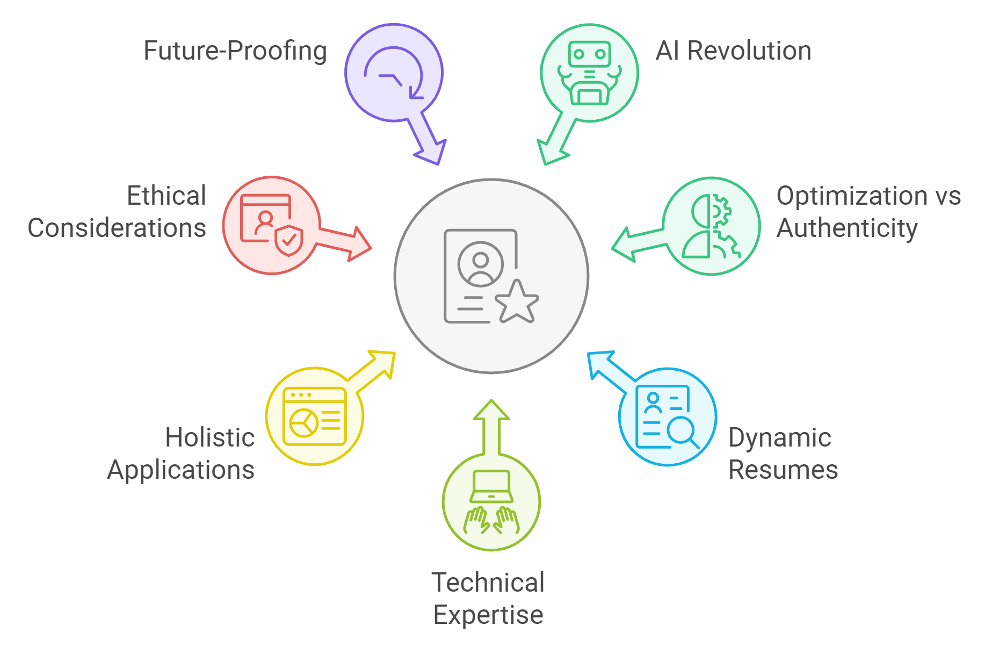
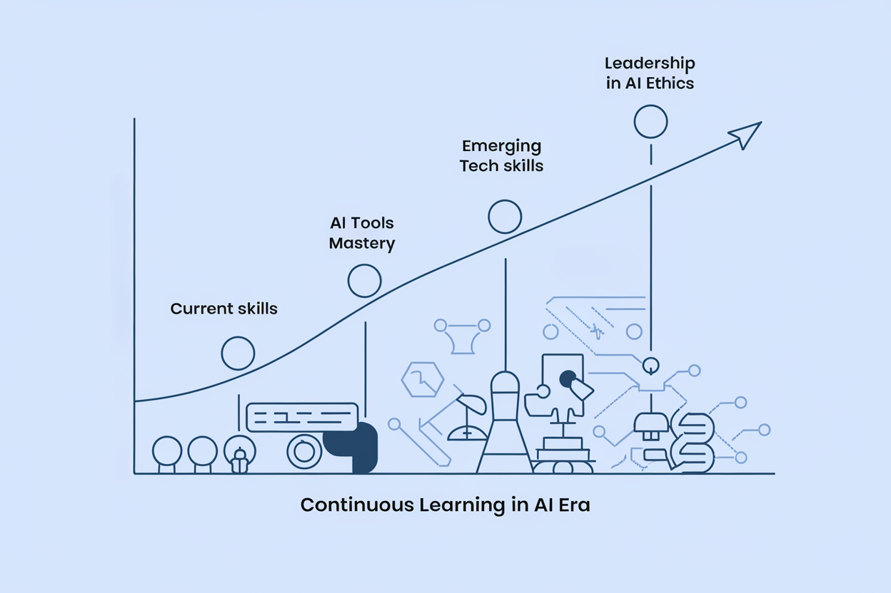
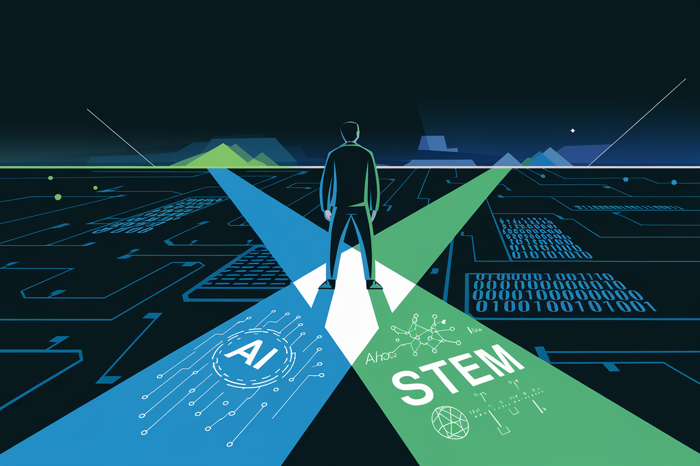
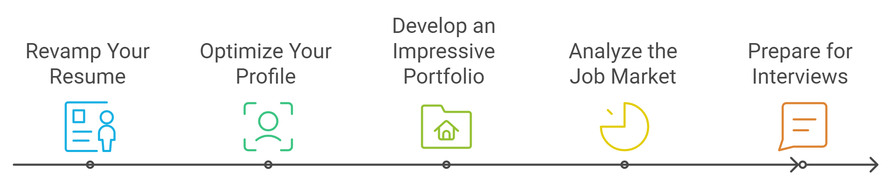

Conclusion: Mastering Your AI-Powered Job Search
Well, well, well, look at you! Do give yourself a pat on the back and a fist bump.
As we wrap up this comprehensive guide to AI-Powered Resume Mastery for STEM Professionals, let's recap the key insights and strategies we've explored.
Key Takeaways (Or: What You Can Brag About at Your Next Virtual Happy Hour)

1. The AI Revolution in Hiring
We've seen how AI has transformed the hiring process, from initial resume screening to final candidate selection. It's truly an industrial revolution for job applications. Understanding this new landscape is crucial for STEM professionals aiming to advance their careers. You're not just looking for a job; you're navigating a new world.
2. Balancing AI Optimization and Authenticity
Throughout this book, we've emphasized the importance of crafting resumes that appeal to both AI algorithms and human recruiters. The key lies in striking a balance between keyword optimization and genuine representation of your skills and experiences. Remember: be yourself, be your best SEO-optimized self.
3. Dynamic Resume Strategies
The static resume is deader than Myspace. We've explored techniques for creating dynamic, adaptable resumes that evolve with your career and the job market.
4. Showcasing Technical Expertise
STEM professionals face unique challenges in presenting complex technical skills and projects. We've provided strategies for effectively communicating your expertise to both AI systems and technical recruiters.
5. Holistic Application Packages
We've gone beyond the resume, examining how to create cohesive application packages that include optimized cover letters, LinkedIn profiles, and digital portfolios.
6. Ethical Considerations
As AI becomes more prevalent in hiring, we've discussed the importance of maintaining ethical standards in your job search, ensuring fairness and authenticity. Because even in the age of AI, integrity never goes out of style.
7. Future-Proofing Your Career
We've looked ahead to emerging trends in STEM fields and AI technology, providing strategies to future-proof your career in a rapidly evolving job market.
The Road Ahead: Next Steps for Your AI-Powered Job Search

As you move forward in your AI-enhanced job search, keep these principles in mind. They're your career GPS, guiding you through the twists and turns of the STEM job market:
- Continuous Learning: The world of AI and STEM is evolving faster than a cheetah on rollerblades. Commit to ongoing education, not just in your technical field, but also in the latest job search technologies and strategies.
- Adaptability: Be prepared to adapt your approach as new AI tools and hiring practices emerge. Be the chameleon of the professional world – immediately changing skills and strategies depending on the environment.
- Ethical Leadership: As STEM professionals, you have the opportunity to shape the ethical use of AI in your fields. Strive to be a leader in promoting responsible AI practices, both in your job search and in your professional roles.
- Holistic Skill Development: While technical skills are crucial, don't neglect the development of soft skills like communication, leadership, and adaptability. These human qualities will become increasingly valuable as AI takes over more routine tasks. Be a Swiss Army knife, not just a really sharp blade.
- Network Building: Despite advances in AI, human connections remain invaluable. Cultivate a strong professional network, both online and offline.
Practical Next Steps
To put the strategies from this book into action, consider this your marching orders:
- Conduct a thorough audit of your current resume, LinkedIn profile, and other application materials. Use the checklists provided in each chapter to ensure you're implementing AI-optimized strategies.
- Set up a regular schedule (e.g., quarterly) to update your skills, achievements, and application materials. This ensures your resume remains dynamic and relevant.
- Experiment with the AI tools we've discussed for resume optimization, job market analysis, and skill development. Find the combination that works best for you.
- Create a personalized learning plan to address any skill gaps identified through your resume audit and market analysis.
- Draft your ethical AI use statement, as discussed in Chapter 6, to guide your approach to AI-powered job searching.
Final Thoughts
The intersection of AI and STEM careers presents both challenges and unprecedented opportunities. It's like standing at the crossroads of the digital revolution – exciting, a bit scary, but full of potential. By embracing AI tools for career development, continuously expanding your skills, and maintaining a forward-looking perspective, you're well-positioned to thrive in this new era.

Remember, the goal isn't to game the system, but to use these tools to present your authentic self in the most effective way possible. Your unique combination of technical expertise, soft skills, and ethical awareness is what will ultimately set you apart in your STEM career. You're not just a collection of keywords – you're a brilliant, complex human being with the power to shape the future of technology.
As you embark on your AI-powered job search journey, stay curious, remain ethical, and never stop learning. The future of STEM is bright, and with the strategies you've gained from this book, you're well-equipped to not just navigate that future, but to help create it.
Your next chapter awaits – go forth and excel in the AI-driven world. In the grand algorithm of life, you're the function that defines success. Go out there and compute your way to greatness.
Bonus: Your 30-Day AI-Powered Job Search Plan
To help you put these concepts into immediate action, here's a 30-day plan to jumpstart your AI-powered job search.

Days 1-5: Resume Overhaul
- Audit your current resume against the AI optimization strategies in Chapter 3.
- Rewrite your professional summary and achievement statements using the formulas provided.
- Create a skills matrix as described in Chapter 2.
Days 6-10: LinkedIn Optimization
- Update your LinkedIn profile using the strategies from Chapter 5.
- Create and schedule a month's worth of industry-relevant posts.
- Engage with content in your field and expand your network.
Days 11-15: Portfolio Development
- Create or update your digital portfolio, focusing on 3-5 key projects.
- Write AI-optimized descriptions for each project.
- Ensure your portfolio is ATS-friendly as discussed in Chapter 4.
Days 16-20: Job Market Analysis
- Use AI-powered job market analysis tools to identify trending skills in your field.
- Create a learning plan to address any skill gaps.
- Set up job alerts on major platforms using AI-optimized keywords.
Days 21-25: Application Package Customization
- Develop templates for AI-optimized cover letters.
- Create a master list of achievements that you can quickly customize for different applications.
- Practice using AI tools to tailor your resume for specific job descriptions.
Days 26-30: Interview Preparation and Future-Proofing
- Research and practice with AI-powered interview preparation tools.
- Develop your ethical AI use statement.
- Create a 6-month plan for continuous learning and skill development.
By the end of this 30-day plan, you'll have a fully optimized, AI-ready job application package and a strategy for ongoing career development in the AI age.
Remember, your AI-powered job search journey is a marathon, not a sprint. Stay committed to continuous improvement, and you'll be well-positioned for success in your STEM career.
Best of luck in your future endeavors! May the odds be ever in your favor, may the force be with you, and may your career trajectory be as unstoppable as change.